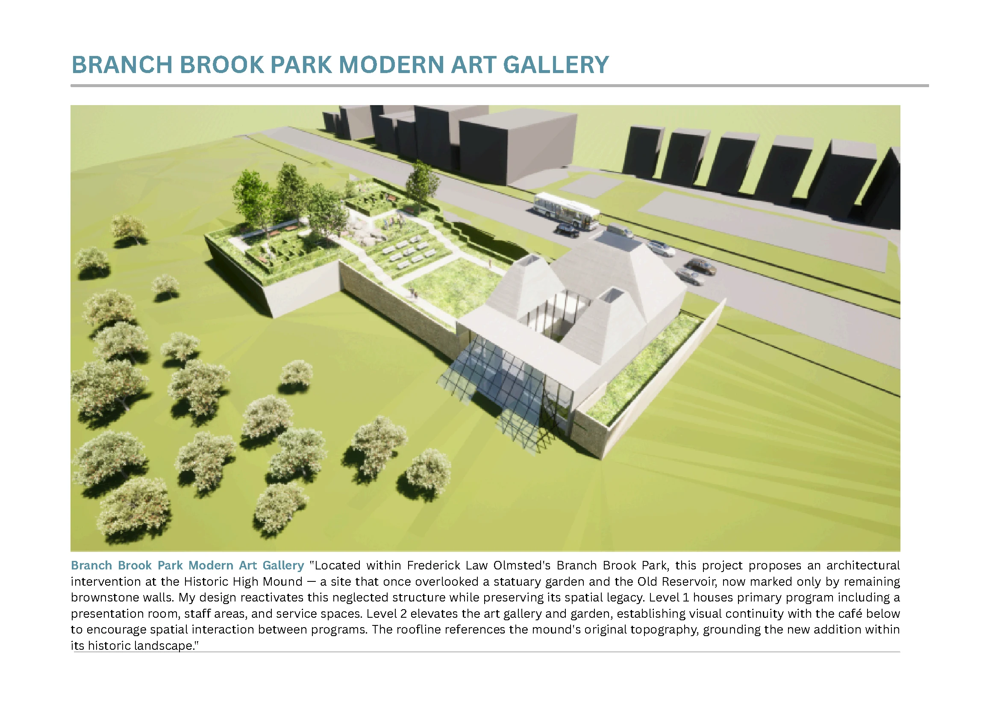
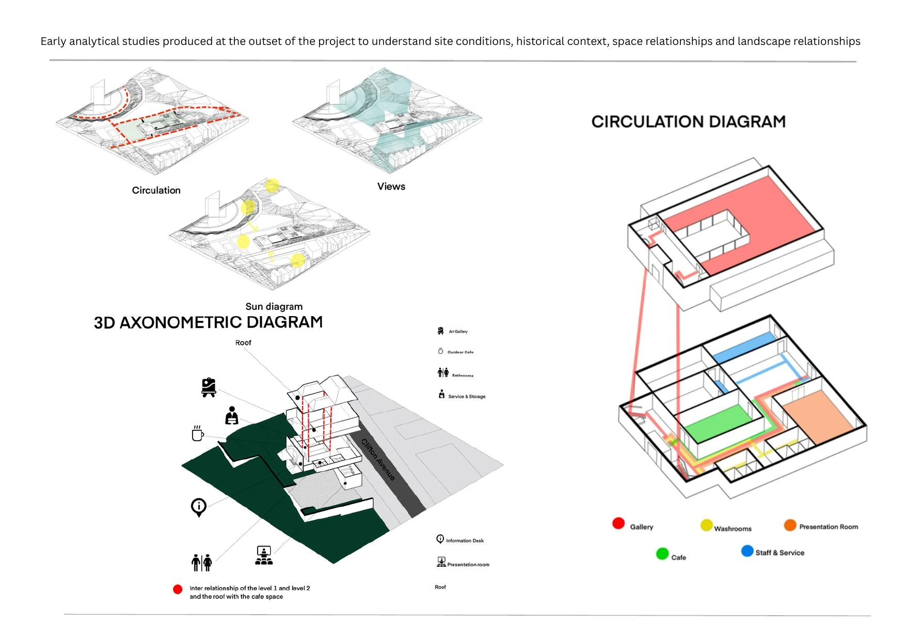
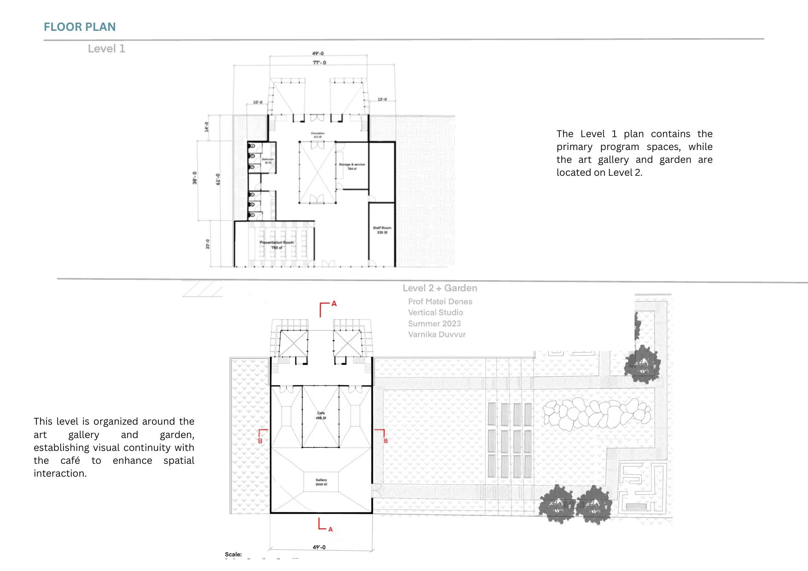
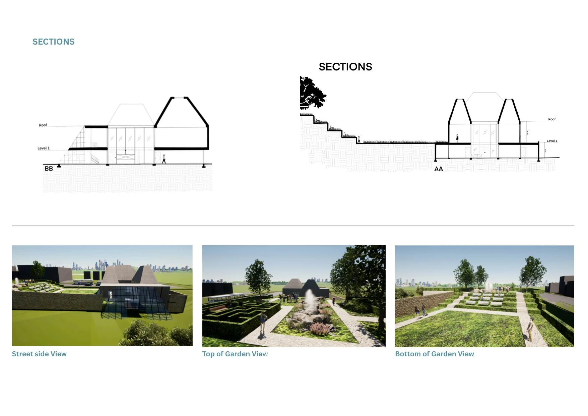
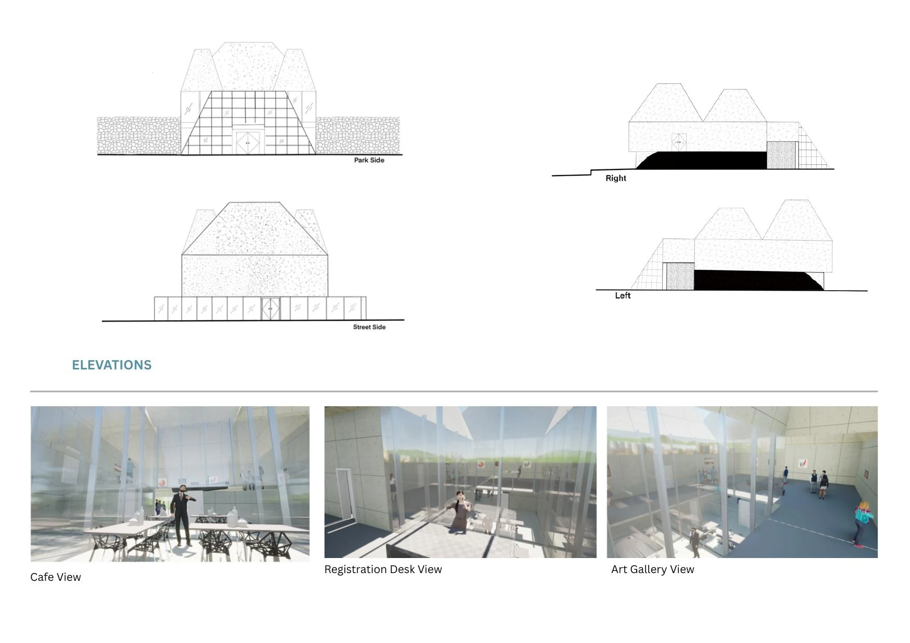

03 / Adaptive reuse
Branch Brook Park
Modern Art Gallery

Project statement
Located within Frederick Law Olmsted's Branch Brook Park, the project reactivates the historic High Mound—a site that once overlooked a statuary garden and reservoir—while preserving its remaining brownstone walls and spatial legacy.

A new gallery grounded
in historic landscape.
The primary program occupies Level 1, while the gallery and garden rise to Level 2. Visual continuity with the café connects programs, and the roofline recalls the mound's original topography.


